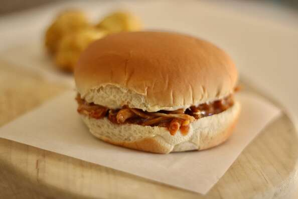

Chicken-Burger

Description
This shredded chicken sandwich is great when you don't have
a ton of ingredients laying around to make an elaborate meal.
Experiment with the seasoning measurements. No matter what,
I find it turns out delicious. Simple, tasty, and filling--and
great for leftovers!
Ingredients
- 2 (8 ounce) skinless, boneless chicken breast halves
- 2 tablespoons lime juice
- 1 bay leaf
- 1 pinch garlic salt, or to taste
- 1 pinch onion powder, or to taste
- 1 pinch poultry seasoning, or to taste
- ground black pepper to taste
- 1½ cups BBQ sauce
- 1 cup salsa
- 1 teaspoon cayenne pepper
- 2 tablespoons mayonnaise, or to taste
- 4 (2 ounce) hamburger buns
Steps
- Put chicken into a pot and fill water to cover by 1 inch. Add lime juice, bay leaf, garlic salt, onion powder, poultry seasoning, and pepper; bring to a boil.
- Reduce heat, partially cover, and simmer until chicken is no longer pink in the center and the juices run clear, 8 to 10 minutes. An instant-read thermometer inserted into the center should read at least 165 degrees F (74 degrees C).
- While chicken is cooking, combine BBQ sauce, salsa, and cayenne in a medium bowl.
- Remove cooked chicken from the pot and shred with 2 forks. Mix shredded chicken into the BBQ sauce mixture until fully covered.
- Put a little mayo on each hamburger bun and pile the shredded chicken mixture on top.